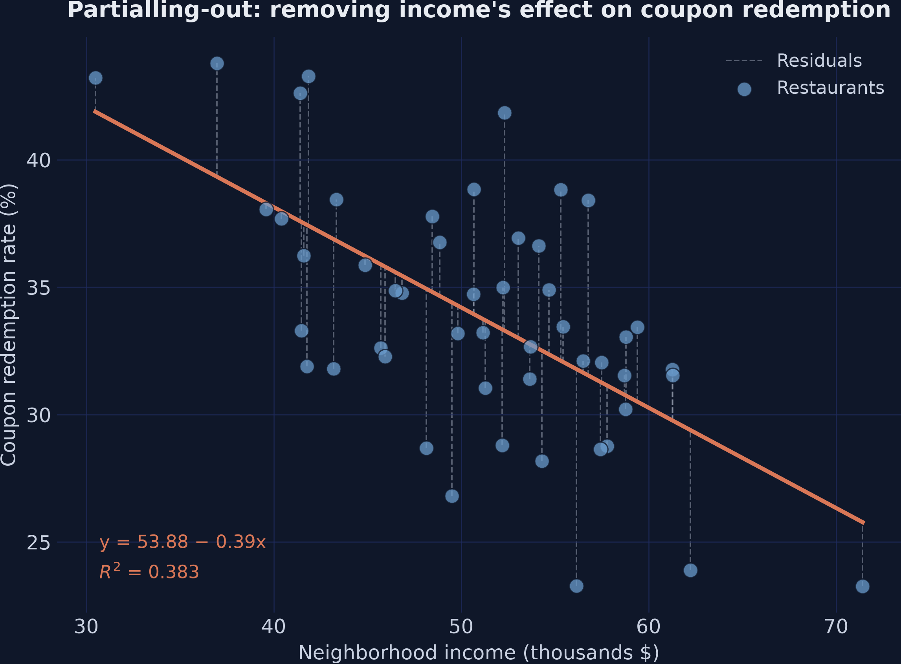
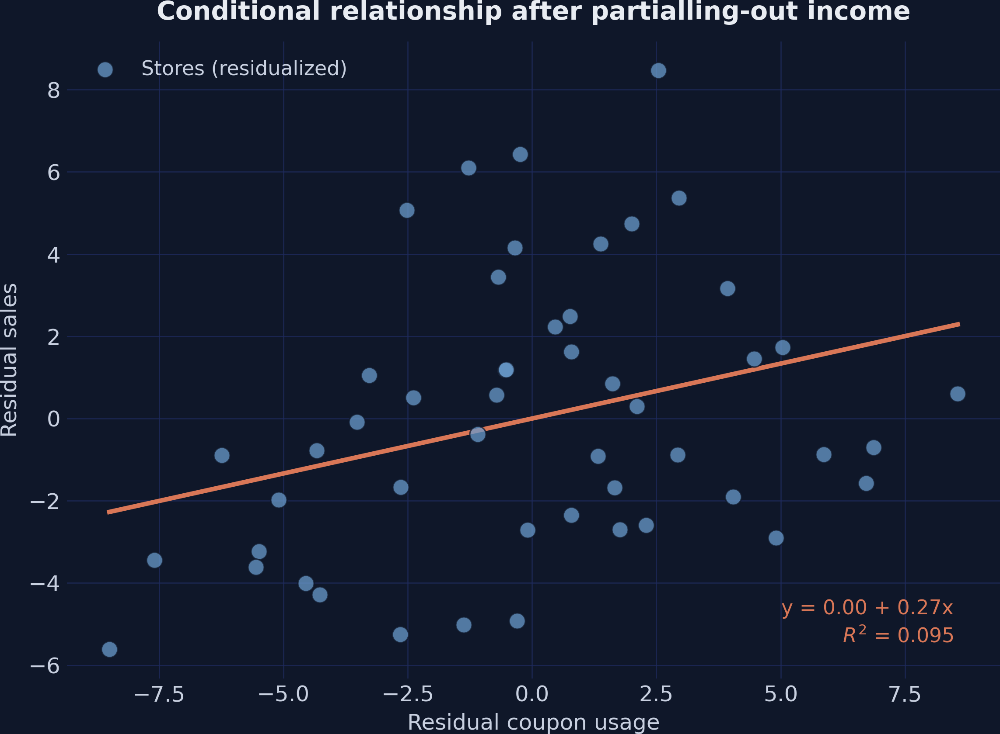
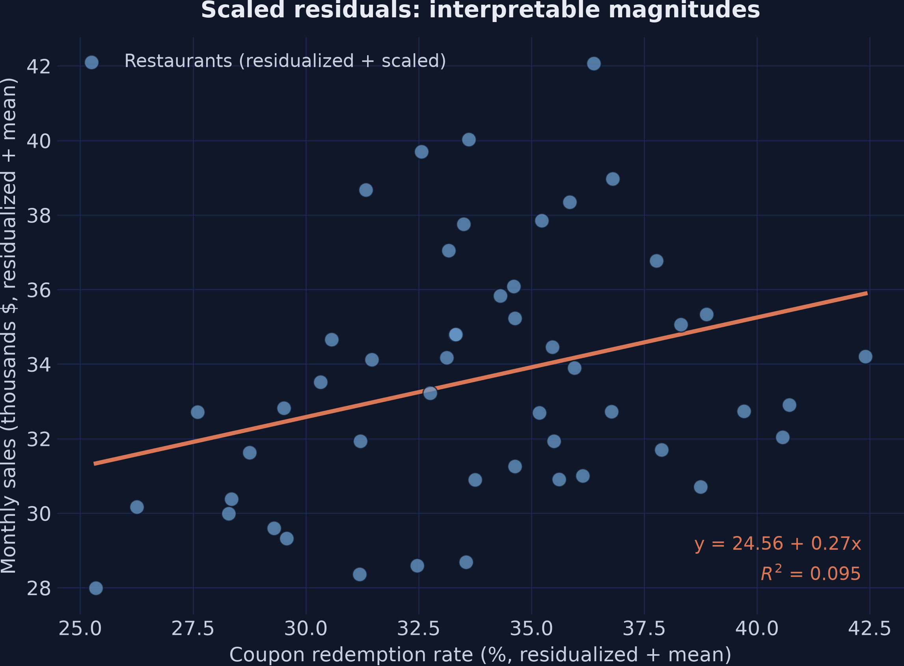
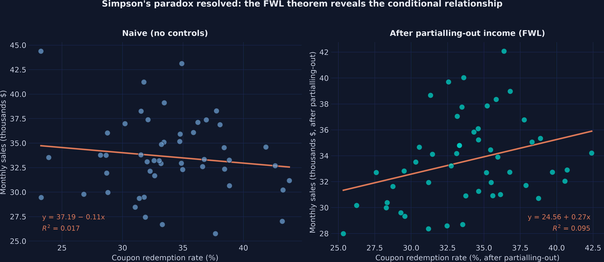

\(M_2\) is the residual maker: \(M_2 X_2 = 0\), symmetric, idempotent. \(X_2\) holds a column of ones and income.
No regression library needed: plain NumPy returns the same 0.2673.
Three lines of statsmodels reproduce the multivariate coefficient
# residualize each variable with respect to incomedf["coupons_tilde"] = smf.ols("coupons ~ income", df).fit().residdf["sales_tilde"] = smf.ols("sales ~ income", df).fit().resid# regress residual sales on residual coupons (no intercept)fwl = smf.ols("sales_tilde ~ coupons_tilde - 1", df).fit()fwl.params["coupons_tilde"] # 0.2673, same as full OLS
Residuals are mean-zero, so we drop the intercept. The coefficient on coupons_tildeis the controlled effect.
Before you look: does the Step 1 shortcut keep both numbers?
Step 1 regresses raw sales on residualized coupons, with no intercept.
A. Same coefficient (0.2673) and the same SE, about 0.12
B. Same coefficient, but a much larger SE
C. A different coefficient
Step 1 keeps the coefficient, but its SE balloons to 1.2715
Regression
Coupons coef.
SE
p
Full OLS (+ income)
+0.2673
0.1203
0.031
Step 1 (no intercept)
+0.2673
1.2715
0.834
Right coefficient, wrong SE: stop here and you would conclude coupons do nothing.
Step 1’s SE explodes because the intercept is missing
Regression (coef. 0.2673 in every row)
SE
SSR
df
Step 1, no intercept
1.2715
57,181
49
Step 1 + intercept
0.1437
715
48
Step 1, demeaned sales
0.1422
715
49
Full regression
0.1203
491
47
The intercept alone closes 98% of the SE gap; the rest is income still left in sales.
Before you look: will Step 2’s SE equal the full model’s 0.1203?
Step 2 residualizes sales too, then regresses residual on residual, with no intercept.
A. Yes, exactly 0.1203
B. Close, but slightly smaller
C. Close, but slightly larger
Step 2 leaves the same residuals — only the degrees of freedom differ
Regression
Coupons coef.
SE
Residual df
Step 2: \(\tilde y\) on \(\tilde x_1\)
+0.2673
0.1178
49
Full OLS (+ income)
+0.2673
0.1203
47
SE ratio \(= \sqrt{47/49} = 0.9794\): the full model spends two df on the intercept and income.
Same residuals, same coefficient: report the full-model SE, 0.1203.
Partialling-out, drawn: residuals are what a straight line in income leaves over

Coupon usage vs. income; the orange line is the income→coupons fit, dashed lines are the residuals each store keeps.
The hidden positive relationship the table couldn’t show you

Residualized sales vs. residualized coupons. With income removed from both, the slope is the +0.267 conditional effect.
Before you look: does adding the means back change the slope?
Shift each residual by its variable’s sample mean. Every point moves up and to the right.
A. No, the slope is unchanged
B. Yes, the slope gets steeper
C. Yes, the slope gets flatter
Adding the means back keeps the slope but restores readable units

Same residual scatter shifted by the sample means — axes now read ~34% coupons and ~$33.6K sales, slope still +0.267.
Before you look: does a second control move the coupon coefficient?
Add day of week as a second control. In the DGP it is independent of both coupons and income.
A. Not at all: it stays exactly 0.2673
B. Slightly
C. A lot: day of week is a second confounder
A second control barely moves the coefficient — and FWL still matches it
Model
Coupons coef.
SE
Residual df
Full OLS (+ income + day)
+0.2706
0.1194
46
FWL (+ income + day)
+0.2706
0.1157
49
0.2673 → 0.2706: day of week’s chance partial association with coupons, given income (partial corr. −0.021). Not a precision gain.
FWL holds for any number of controls: partial them all out at once.
The Resolution
Act III
After partialling out income, the estimated effect is +0.267
+0.267
\(\hat\beta_1\) on coupons, full OLS = FWL · SE 0.1203 · 95% CI [0.025, 0.509] contains the true +0.200
Simpson’s paradox, resolved: the slope flips from −0.106 to +0.267

Left: naive negative slope. Right: positive slope after partialling out income. Same 50 stores.
Every FWL variant matches its full regression — only the SE moves
Method
Coupons coef.
SE
df
Naive OLS (no controls)
−0.1059
0.1158
48
Full OLS (+ income)
+0.2673
0.1203
47
FWL Step 1 (no intercept)
+0.2673
1.2715
49
FWL Step 1 + intercept
+0.2673
0.1437
48
FWL Step 2 (residualize both)
+0.2673
0.1178
49
Full OLS (+ income + day)
+0.2706
0.1194
46
FWL (+ income + day)
+0.2706
0.1157
49
Does FWL make this causal? No — it visualizes, it does not identify
Objection. Residualizing on income looks like a trick that manufactures a causal effect.
Response. FWL is pure algebra — it only reproduces what OLS already computes. The causal reading needs one assumption: income is the only confounder. FWL pictures that adjustment; it cannot certify it.
FWL is Double Machine Learning with a linear mop
FWL (here)
residualize \(y\), \(d\) with OLS
regress residual \(y\) on residual \(d\)
misses outcome curves that move with \(d\)
Double ML
residualize \(y\), \(d\) with cross-fitted ML (forest, lasso)
regress residual \(y\) on residual \(d\)
learns nonlinear, high-dim controls
Same residualize-then-regress logic; swap OLS for cross-fitted flexible learners and you get a debiased estimate — causal only if no confounder is unmeasured.
Don’t read the coefficient — read the partialled-out scatter.